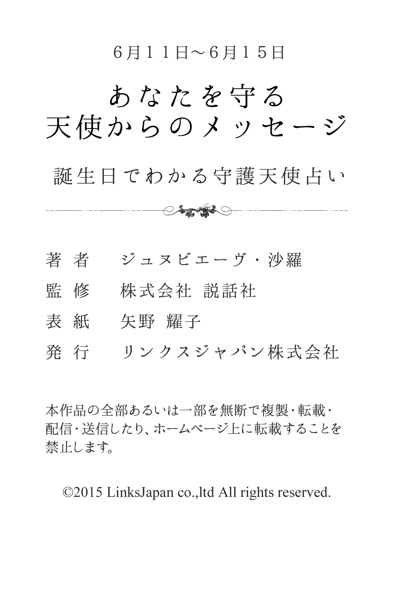

| ６月１１日～６月１５日生まれ あなたを守る天使からのメッセージ 誕生日でわかる守護天使占い (得トク文庫) | |
| ジュヌビエーヴ・沙羅 | |
| (2015) | |

1 、はじめに
「何かに、あるいは誰かに守られている......」
あなたは、そんなふうに感じたことはありませんか？
たとえば、限定発売のお菓子を購入しようと長い行列に並び、最後のたった１つを運良く購入できたり、学生の頃、授業で順々に答えなければいけなくなり、「あー、どうしよう！ 全然わかんないよ」と青ざめて固まっていると、先生があなたを指名しようとした瞬間、終了のベルが鳴り響いたり......
そんなほほえましいエピソードをもつ人もいれば、九死に一生を得るような重大事に遭遇して、心から「助かった！」と安堵のため息をもらした経験を持つ人もいるかもしれません。
そんなとき、あなたが何かに守られているような気がするのは、実は決して気のせいだけではないのです。なぜなら、それは守護天使のおかげだからです。
有名な神学者であり哲学者でもあるトマス・アクィナスは、『すべての人々に、クリスチャンであれ、それ以外の人であれ、たとえ大罪人であっても、あらゆるすべての人々に、決して離れることのない守護天使がついている』と記しています。
そう、守護天使とは、人が生まれてから死ぬまでの一生の間、その人と深く結びつき、保護し、そばにいてくれる天使のこと。あなたの心をより良い方向へと導くために霊感を送り込み、幸せな人生を送るための手助けをしてくれる神秘的な存在です。
さらに、それぞれの守護天使には、固有のキャラクターや得意な守護分野があります。したがって、あなただけを守ってくれる守護天使をよく知り、その言葉に耳を傾けることで、よりあなたらしく生きることができ、真実の幸せの形が見えてくることでしょう。
沙羅

2 、第１章 守護天使のささやき
★あなたの恋愛傾向
小天使アルペルに見守られているあなたは、いつもニコニコしていて、怒ったり人と衝突することのない人です。感情を表現するのが苦手なタイプですので、たとえ意中の人であっても、自分からアプローチすることはないでしょう。このように恋愛においては奥手ですが、恋人の理想をひたむきに追い続ける傾向があります。また、たとえすてきな異性から言い寄られても、納得しなければ徹底的に排除します。恋愛経験は少なめでしょう。
★好きなタイプと嫌いなタイプ
あなたの好みのタイプは、自分の信念をしっかりともった夢のある人です。常に先を見て進んでいくような精神力のある人に惹かれます。半面、ネガティブでやる気のない人は苦手です。何ごとも相手に頼ってくるような人はむしずが走るほど嫌いでしょう。
★最も好むセクシャルな雰囲気
あなたは自分から誘うのが苦手なので、甘えられることにセクシャルさを感じるようです。ベッドの中でも、受け身なので、相手からリードされたほうが燃え上がるでしょう。ただし、強引ではなく、ムードたっぷりに導き、迫られるおとがポイントです。
★運命の出会いはどんな人？
あなたの運命の人は根が真面目で、自分の思念というものをもっている人でしょう。やや社交性には欠けるかもしれませんが、友人や恋人をとても大切にする人だといえます。自分の生き方にポリシーをもっていて、夢に向かって努力しているかもしれません。
★運命の出会いが与える影響力
運命の出会いがあなたに与える影響力は、それがハッピーならハッピーなほど、さらに大きな理想となって表れるでしょう。幸せいっぱいな二人でいられることを強く望み、まるでドラマのようなつき合いをしたいという願望が出てきます。ただ、初めのうちはお互いにハッピーでいられるでしょうが、やがては無理をしていることに疲れを感じてしまうかもしれません。あなたは妥協や自分が犠牲になるといったことがあまり考えられなくなりますから、注意が必要でしょう。
★結婚後の変化
結婚後のあなたは、いつまでも独身時代に描いていた理想の結婚生活を追い求めるため、現実とのギャップに思い悩むようなことがあるかもしれません。特に、家計のやりくりなど、現実的にシビアにならざるを得ない問題は苦手でしょう。ただ、もともとの理想が高く安直に結婚にも踏み切らないので、経済的に恵まれた結婚生活になる可能性も高そうです。外での仕事と家庭を両立させるよりは、家庭に入ってパートナーや子供に尽くすことに喜びを見出すでしょう。
★好きな恋のシチュエーション
あなたの好きな恋のシチュエーションは、自分からアタックするのではなく、相手のほうからアプローチされるときにあります。特に、自分が以前から思いを寄せていた相手から、やさしくされたり、告白されるといった瞬間がたまらなく好きでしょう。自分が感情表現を苦手とする分、その気持ちを察して相手が心遣いを見せてくれるといったシチュエーションも同様です。また、自分のもっている夢や理想を理解してくれ、何の見返りもなく一緒に協力してくれるといった瞬間も好きでしょう。
★どんな人を選べばうまくいく？
あなたは、自分の信念をもっていて、本質的なものを大切にするパートナーを選ぶといいでしょう。人づき合いは苦手でも、あなたのことを第一に考えてくれる人が、パートナーとして向いています。また、ロマンチストで、少年のような一面をもつ人を選ぶと、甘いムードを味わうことができるはずです。だからといって、まったく頼りない、ナイーブ過ぎる人とは、地に足のついた生活を望めそうにありません。夢見がちなあなたを受けとめる度量の大きい人であることも、重要なポイントになります。
★イメージチェンジのアドバイス
あなたは、若々しく元気な雰囲気を出すために、カジュアルなファッションに挑戦するといいでしょう。ミニスカートやショートパンツで、健康的な脚線美を見せるのもおすすめです。軽やかなヘアスタイルと明るい感じのメイクが、好感度が増す秘訣といえます。
★あなたが恋に感じる幸せ
内気なあなたは、自分から愛情表現するのが苦手なタイプです。派手にアプローチされるより、何気なく気持ちが伝わってきたときに、幸せを感じるでしょう。たとえば、さり気なく肩を抱かれたり、人ごみで手をつないで導いてくれたり、自然な形でスキンシップをしてくれると、うれしい気分になるはずです。また、あなたはロマンチックなところがあるので、すてきな音楽などで雰囲気を盛り上げてくれると、ますます幸福度が増すでしょう。
★求めているものは何？
恋人関係になったら、あなたは恋愛の主導権を相手が握って、どんどんリードしてくれることを望むでしょう。内気で自分の気持ちを上手に表現できないあなたなので、相手から積極的に肩を抱かれたり、手を握ったりというスキンシップで愛情を伝えられることが大切なようです。

3 、第２章 大天使の恋予言
★どうすれば幸福な恋を獲得できる？
あなたを守護していてくれる大天使ビナエルは、「尊厳の天使」とも呼ばれ、あなたに強靭な精神と判断力を与えてくれているはずです。また、あなたが恋愛において危機に陥ったときや、思い悩んだときは、そっとアドバイスを与えながら、守ってくれることでしょう。あなたが幸福な恋をつかみ取るには、意中の人と手紙やはがき、Ｅメールなどを有効に活用し、交流を図るといいでしょう。ビナエルの加護を得ることができます。また、旅に出たときは、必ず絵はがきを書くようにしてください。
★あなたのセックス傾向
あなたは、さほどセックス関しては貪欲なほうではないようです。自ら積極的に誘っていくというよりは、相手の出方や状況によって出ていく、という傾向が強いでしょう。どちらかといえばセックスのプレイに夢中になるよりも、冷静に相手の表情などを観察しながら快楽を得ていくようです。プレイ自体もわりと淡白で、オーソドックスなセックスでしょう。また、裏返すと、特に好きな人ではなくても、相手が誘ってくれば応じてしまうといったケースもなくはありません。
★あなたが捨てるべき性のこだわり
あなたは、雰囲気のいいロマンチックな場所でなければセックスをする気にならないと、頭では考えがちでしょう。安心感を無意識に大切にするので、自分の部屋で...というこだわりをもっているようです。車の中など、さまざまなシチュエーションでも受け入れたほうがいいでしょう。
★運命の出会いの瞬間
あなたにとっての運命の出会いは、あまりのり気ではなかったイベントや仲間の集まりなどに出かけたときに訪れるでしょう。少し無理して訪れたにも関わらず、楽しい時間を過ごすことができ、そんなとき気さくにあなたに声をかけてきた人に、ときめきを感じることでしょう。
★あなたが与える愛の特徴
あなたは、相手に対して真面目で、真剣な愛を与えてあげることができるでしょう。相手の性格を理解することが巧みですから、上手におつき合いを展開させていくことができるはずです。華やかな恋とはいえないかもしれませんが、お互いを信じ合い思いやりのある関係に育てていくことができます。普段からの何気ない愛情表現に、相手は愛されていることを実感することができ、また、何か問題が起きたとしても的確に対処していけるあなたの姿に、尊敬すら感じることでしょう。
★運命の出会いを無駄にしないために
あなたが運命の出会いを成就させるためには、積極性や勇気を出すことが大切です。相手を愛する気持ちをもっていても、それを表現していかなければ良い関係を維持することはできません。決して臆病にならず、相手を支え、やさしさや思いやりをアピールしていきましょう。また、あなたのすべてをさらけ出していくことも重要なポイントになります。妙に背伸びなどせずに、純真なあなたを見せていけばいいのです。多少、わがままに映るくらいに自分をぶつけていくことがポイントでしょう。
★あなたの魅力と弱点
あなたの魅力は、どちらかといえば積極的ではないのですが、その内側に情熱とやさしさが満ちあふれているところでしょう。真面目で真剣な愛情を、献身的なまでに与えていくことができます。相手を理解してあげられるように努力し、何気なく思いやりを投げかけていけるあなたです。ただ、いかんせん自分から相手にアプローチしていくことがなく、目の前のチャンスをみすみす逃がしてしまう傾向があります。たとえ自信があったとしても、待つ姿勢を崩さず、なかなか相手に気持ちを伝えられないようです。
★あなたを助けてくれるのは？
あなたを助けてくれるのは、会社の同僚になります。同じ環境にいて、日頃からあなたという人間をわかっていてくれる人から、アドバイスをもらうといいでしょう。さまざまな人からの助言を求めることで、自分の殻に閉じこもるのを防ぐこともできます。
★あなたが告白する場合のアドバイス
あなたが告白する場合、相手のリードに従ったほうがいいでしょう。日頃からどんな要求にも応え、素直に従う姿を印象づけておくのが成功のポイントになります。ドキドキして告白するより、地道にアプローチしたほうが、相手に気持ちが伝わるはずです。おとなしそうだけど、芯が強いことをわかってもらうよう心がけることがポイントでしょう。ただし、受け身で甘えるのではなく、相手に対する思いやりを忘れないことが大切になります。暗い雰囲気にならないよう、明るく振る舞う努力が必要でしょう。
★あなたの恋の問題点
あなたは、せっかく目の前にある恋のチャンスを幾度となく見逃してきたかもしれません。自分から相手に積極的なアプローチをしていくことができず、お互いに好きだという気持ちを知りながらもつき合うまでには至らなかったということもあるはずです。それは、交際が始まっても同じで、あなたが相手を好きであるほど、本心を伝えたり素直な愛情表現ができずに、悲しい結末を迎えることもあるでしょう。自分のすべての愛を与えないうちに、別れを迎える傾向が見え隠れします。
★幸せな恋のために、あなたが変えたほうがいい点
あなたが異性に対して消極的でいることはいいことではないでしょう。しなやかでおとなしい面はいいとしても、あまり内気で暗い人だと相手に印象づけないことが求められます。自分の気持ちは素直に、ストレートに伝え、相手からのアプローチを待つ姿勢は改めるべきでしょう。
4 、第３章 大天使のご神託
★あなたが幸福な恋を見つけるために
あなたは、引っ込み思案にならないで、いろいろなイベントや活動に参加してみましょう。友人からの誘いを敬遠するのはやめて、できるだけ顔を出すよう心がけてください。特に、異性がたくさん集まるところには、無理をしてでも出かけましょう。一人では勇気がなくても、友人が一緒なら、和やかな雰囲気で過ごすことができるはずです。また、アプローチしてくる人がいたら、最初から拒絶しないで、打ち解けて話をしてみることが大切です。ドラマのような展開を待っていては、チャンスを逃がすことがあります。
★不倫関係をどう考える？
あなたはどちらかというと、不倫に対する抵抗感がそれほどないタイプでしょう。基本的には、包容力があり大人のムードを漂わせた人に弱いあなたです。ただ、自分から積極的に既婚者にモーションをかけ、不倫関係にもち込むことはありませんが、大きくてやさしい愛情に包まれ、上手にリードされると気持ちが流されてしまうでしょう。ロマンチストで純粋な面をもつあなたですので、時と場合によっては不倫もありえると考えているようです。
★あなたが不倫関係にはまってしまう理由は？
あなたが不倫関係にはまってしまう理由は、クールで素っ気ない態度の相手から情熱的に愛されてみたいと思うところにあるようです。恋愛をすると、とたんにエゴイストになってしまう傾向のあるあなたは、相手の気持ちが自分以外の人やものごとに向くことを非常に嫌います。そのため、自分との関係になかなか熱くならない相手に、「我を忘れるくらいに愛してほしい」と感じるのでしょう。恋愛に関する貪欲さに、歯止めが効かなくなるようです。
★あなたに相手から惹かれる理由
あなたが相手に惹かれた本当の理由は、あなたの面倒見の良さとやさしさに、気づいたからでしょう。本来は内気なあなたですが、一度、心を開いた人に対しては、とことん親身に接するようになります。どんなささいな相談事でも、まるで自分の悩みのように真剣に考えてくれるあなたに、愛しさを感じるようになったのでしょう。ごく親しい人に見せる、あなたの少しわがままな一面も、相手にとってはかわいくて仕方がなく思えるようです。
★あなたの悪い癖
あなたは、恋愛に関しては消極的なタイプですが、恋が成就するととたんに束縛心が強くなり、周囲に対する思いやりを欠いたエゴイストに変貌してしまうことがあるようです。また、本命の恋人がいるにもかかわらず、他の異性から好意的に扱われたり、巧みに口説かれたりすると流されてしまうところがあります。その場の状況や雰囲気によって、恋愛に対する貪欲さに歯止めが効かなくなるのは、あなたの悪い癖でしょう。
★あなたは結婚後、浮気をする？
あなたは結婚後、自分から積極的に異性を求めることはありませんが、結果的には簡単に浮気に走ってしまうタイプのようです。もともとロマンチストで純真なため、ムードに弱いところがあります。包容力のある大人の異性にやさしく包まれリードされると、たちまち夢心地になって身も心も許してしまう可能性があるでしょう。また逆に、わがままで保護本能をくすぐるような子供っぽいタイプにも弱く、すっかり入れあげてしまうケースも考えらそうです。
★あなたが結婚後に望むこと
あなたは結婚後、パートナーに対して何も言わなくても自分のことをわかってほしいと思うようになります。派手な愛情表現は好みませんが、自分の気持ちが伝わっていることを、きちんと示してほしいと望むでしょう。また、夫婦や家族で美術館やコンサートなど、文化的な場所へ行きたがるようにもなりそうです。文学やアートなどを一緒に楽しんで、価値観を共有したいと思います。ただし、アクティブなレジャーはあまり望まないでしょう。
★あなたは、どんな恋を求めている？
あなたはかなり堅物で、恋愛にはどちらかというと消極的なタイプです。しかし、時には、誰か愛しい相手にそばにいてもらいたいという気持ちが芽生えることもあります。それは、自分のごく親しい友人に恋人ができたり結婚が決まったりして、友人の幸せそうな顔を見たときでしょう。そんなときは、さすがのあなたも寂しい気持ちとうらやましさが募り、自分も恋したいと真剣に思い悩むようになります。つまり、そのときこそ、恋に落ちやすいときです。時期的には、特に春と秋の結婚式シーズンがチャンスでしょう。
★あなたの恋の終わりと始まり
あなたの恋が終わりを告げるとしたら、それは、相手にとって、あなたが恋人というより、身内のようになってしまった場合でしょう。どんなことをしても許してあげられるあなたは、恋人というよりも、親のような存在になってしまうことが少なくないからです。それに気づいたとき、あなたの恋は終わりを告げます。でも、新たな出会いも期待できるでしょう。あなたの恋は、やさしさや親切心から始まるはずです。ちょっとした親切をしてあげた相手から、恋を告白されるケースが圧倒的に多くなります。
★あなたが夢見ている恋の形
あなたが夢見ているのは、純粋な恋です。好きな人と一緒にいるだけで、ただただ幸せでたまらないといったピュアな恋を望んでいます。それは、たとえていえば初恋のような、ただひたすら相手が好きでたまらず、相手のことを考えるだけで胸がいっぱいになるといったイメージに近いでしょう。相手の将来性がどうかとか二人の相性がいいか悪いかなんて思い悩む以前の、ただひたすらに好きという気持ちを大事にした、世俗にまみれない恋を夢見ているのです。

5 、第４章 大天使のアドバイス
★どうすれば幸福な恋を獲得できる？
あなたが仕事場で株を上げる方法は、責任感をもつこと以外ないでしょう。あなたのもつ、楽天的なところ前面に出すより、自分の行動に自覚をもち、失敗やミスなどを素直に認めることが大切です。反省は明るく簡潔に、そして欠点はできる限り直していく。そんなあなたの前向きな態度を、周囲に対して積極的にアピールしていきましょう。問題の責任を、決して他の人のせいにしないことです。それを徹底するだけでも、あなたの株は上がっていきます。
★あなたが能力を活かすためには？
あなたの能力を活かすためには、地道に感性を磨くことが大切です。あらゆる分野のアートに注目し、常に感動や感激を味わうようにしましょう。たとえ仕事に今すぐ反映されなくても、内面を充実させることで思いもよらないアイデアが浮かぶ可能性があります。精神的な豊かさは、あなたの人柄にまで、好影響を与えてくれるはずです。そんな積み重ねから、やがて実力者から目をかけられ、チャンスを手に入れることになるでしょう。また、睡眠不足やストレスが弱点なので注意してください。
★あなたは仕事と家庭を両立できる？
あなたは、仕事と家庭を両立できないタイプでしょう。家庭がうまくいっているときもそうでないときも、パートナーのことが中心になり、仕事に影響が出る可能性があります。特に、仕事がうまくいかないと、家庭に逃げ場をつくろうとしそうです。反対に家庭内でトラブルが起こると、仕事のほうが無責任になりがちで、上手にバランスをとることが苦手でしょう。また仕事上で問題を抱えると、パートナーに相談するのも面倒になり、自分の殻に閉じこもってしまう傾向があるので気をつけてください。
★あなたにピッタリの職業
あなたにピッタリの職業は日常生活に関連した職種で、平凡なものに独創的な視点を加えるような仕事です。たとえば、アートの感性を活かして、インテリアデザイナーやフラワーショップ、陶芸やテキスタイル関係、また、生活用品なそを開発する分野で、能力を発揮できるでしょう。また、輸入雑貨の買いつけや販売など、海外にも縁があります。さらに専門性を必要とされる、秘書やツアーコンダクターのような職種もおすすめです。

6 、エピローグ
ここで紹介しましたのは、９の大天使の元にそれぞれ８の小天使が存在するというヒエラルキーとグループ構造をもとに占う、ヨーロッパにおいては最も親しまれている「守護天使占い」です。
有名人やスポーツ選手に限らず、あなたの周囲にも、「持ってる」と感じられる人が、きっといるのではないでしょうか。その「持ってる」とは、秀でた才能だったり、華々しい個性だったりするケースもあれば、ここぞというときにパワーを発揮できる勝負強さや、チャンスをモノにする力だったり、皆の視線をひとりじめしてしまう磁力のような魅力や驚異的な実行力だったりするケースもあるでしょう。
いずれにせよ「持ってる」人は、何か不思議なパワーに守られているように見えるはずです。その不思議なパワーこそ、実は守護天使というパワーなのです。
そして、自分の守護天使を知り、守護天使に出会った今日からは、あなたも「持ってる」人の仲間入りを果たしたのです。守護天使の恩恵を、守護天使の慈愛を、あなたもめいっぱい感じて、「持ってる」人生を謳歌してください。
沙羅

7 、著者プロフィール
ジュヌビエーヴ・沙羅
8 月10 日北海道函館市生まれ。女性誌、書籍の編集を経て、占術家に転身。西洋占星術や四柱推命を初めとして、夢占い、タロット占い、紫微斗数占いと幅広く占術を研究。
●著作
「四柱推命恋愛運」（実業之日本社）
「幸運・不運が一目でわかる夢占い」（ナツメ社）
「幸せを呼ぶパワーストーン」（実業之日本社）
「愛とメタモル深層心理テスト」（実業之日本社）
「初めて作るパワーストーンアクセサリー」（ブティック社）
「とっておきの星占い」（ナツメ社）ほか、多数。
